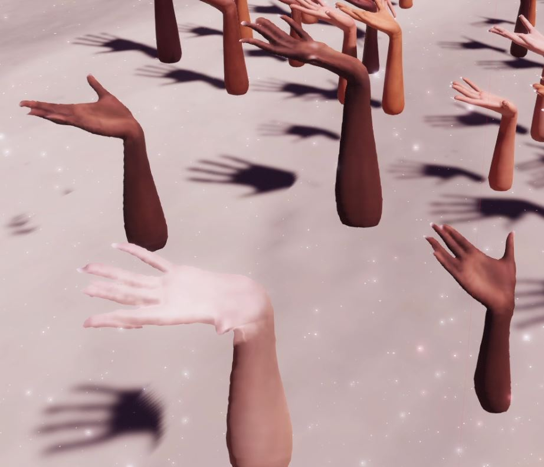
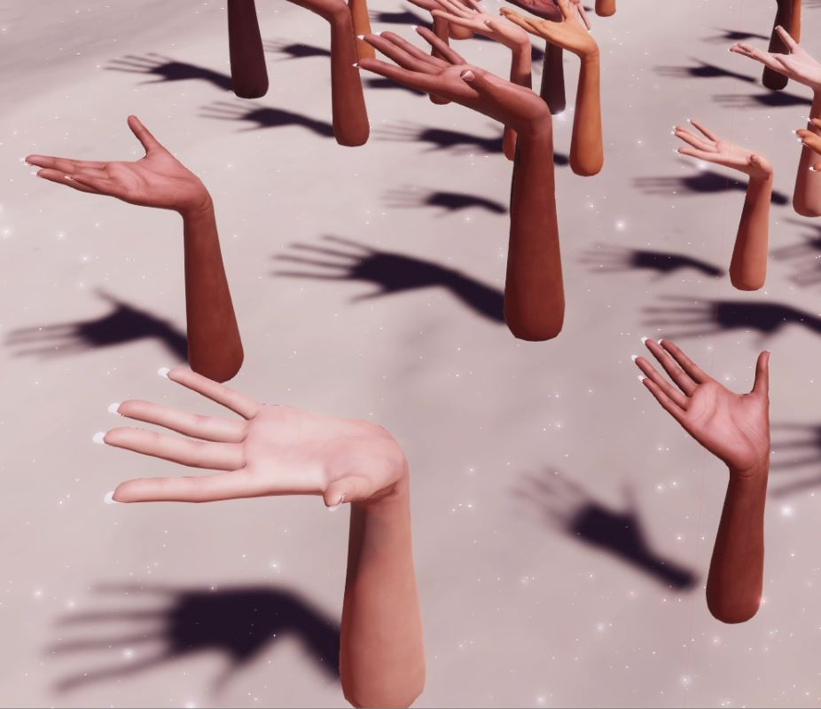
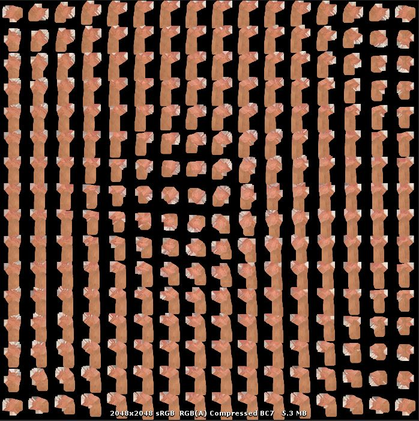
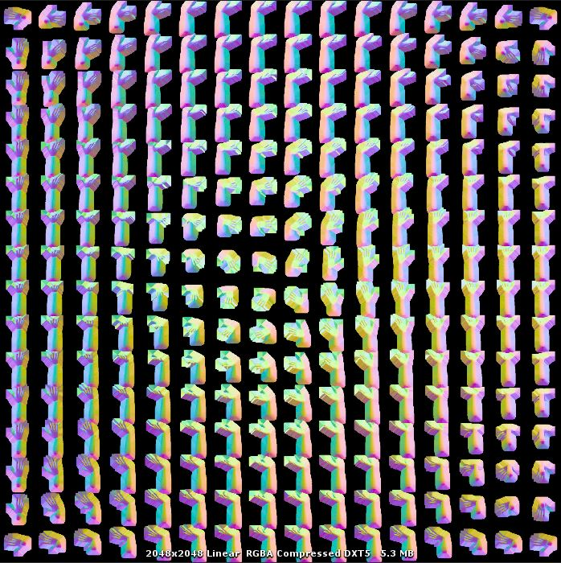

Optimization Breakdown · Hanahana (2018)
Massive Instancing
& Burst Culling
Displaying tens of thousands of hands in VR at 90fps by pairing a custom Burst Compiler culling job with 256-angle Octahedron Impostors.




01 — The Problem: Too Many Hands
Hanahana is an immersive VR experience where players can spawn intricate, sprawling structures made entirely of hands. As the structures grow, the screen quickly fills with thousands, and eventually tens of thousands, of hand meshes.
In VR, performance is brutal. You have around 11 milliseconds to render a frame for both eyes (90 fps). When pushing thousands of individual GameObjects, the CPU overhead of Unity's built-in frustum culling and render loop becomes the primary bottleneck.
I vividly remember profiling the game early on: just the built-in culling operation alone was taking 1.2 milliseconds. When you add the VR cameras (one for each eye) and a water reflection probe (effectively tripling the camera count), we were bleeding precious milliseconds before even sending a single triangle to the GPU. We needed a radical optimization.
02 — Burst Culling to the Rescue
The solution was to completely bypass Unity's Renderer components.
Instead of letting Unity manage visibility, we store a massive array of hand matrices and their bounding boxes in memory.
We then offload the frustum visibility checks to a custom Burst Compiler Job.
// The Burst job processes thousands of bounds against camera frustum planes in parallel
_LODJobProcessor.ProcessLOD(
cam.transform.position, cam.transform.forward, dirLight,
allHands.Count, shadowPlaneCastRadius, InstancedLODDrawer.refFOV, ...
);
// It feeds the visible instance IDs directly into our ComputeBuffers
for (int i = 0; i < LODDrawers.Count; i++)
{
LODDrawers[i].SendIDToDraw(
ref _LODJobProcessor.lodResults,
_LODJobProcessor.lodsStartID[i],
_LODJobProcessor.lodsCounts[i]
);
}
This was back in 2018, when Burst and the C# Job System were still quite new.
By moving the logic to Burst, the culling cost dropped from a heavy 1.2ms to an astonishing 0.1ms per camera.
This change alone gave us the CPU headroom we desperately needed to maintain stable VR framerates, even when the world
was packed with geometry. The results of the job are pushed into a ComputeBuffer and rendered in a single draw call via
Graphics.DrawMeshInstancedIndirect.
03 — Impostors: A Hand is Just a Quad
Even with zero CPU overhead, sending tens of thousands of complex 3D meshes to the GPU will eventually crush the vertex shader and memory bandwidth. To solve this, we implemented an aggressive LOD (Level of Detail) system leveraging Impostors.
Using the Amplify Impostors plugin, we pre-rendered 256 different points of view of the hand mesh into an Octahedron layout. The bake captures the diffuse color, normals, and — crucially — the depth in the alpha channel.
At a distance, a heavy 5000-polygon hand is seamlessly swapped out for a single Quad facing the camera. The shader samples the pre-rendered views based on the camera's current angle relative to the hand. Because we stored the depth map in the alpha channel, these flat quads can correctly intersect with the environment and with other hands without popping or looking like paper cutouts. It even casts and receives shadows properly.
The Final Result: The cost of drawing a distant hand became essentially nothing (2 triangles). By pairing 0.1ms Burst Culling with Impostor Quads, we were able to display tens of thousands of hands on screen simultaneously without dropping below 90fps in VR.
04 — Hindsight: Why not GPU Culling?
Today, the industry standard for this kind of massive instancing is GPU Culling via Compute Shaders. So why did we use the CPU (Burst) instead?
- CPU vs GPU Bottleneck: In VR, the GPU is already under immense pressure rendering two high-resolution views at 90fps. Offloading the culling to Burst utilized idle CPU cores perfectly, leaving 100% of the GPU for pixels.
- Immediate Readback: If gameplay logic needs to know which hands are visible, reading that data back from the GPU to the CPU introduces stalls. Burst keeps the data on the CPU side, ready instantly.
- Engine Maturity: In 2018, doing native GPU culling in Unity's Built-in Pipeline was a complex ordeal involving low-level buffer management. The C# Job System allowed us to write highly performant C++ style code while staying in a familiar C# environment.
That said, a Compute Shader would have enabled Hierarchical Z-Buffer (Hi-Z) occlusion culling. Burst is great for frustum culling, but it can't easily tell if a hand is hidden behind a wall. In a game like Hanahana where structures stack densely, GPU occlusion culling would have saved an enormous amount of pixel overdraw bandwidth.